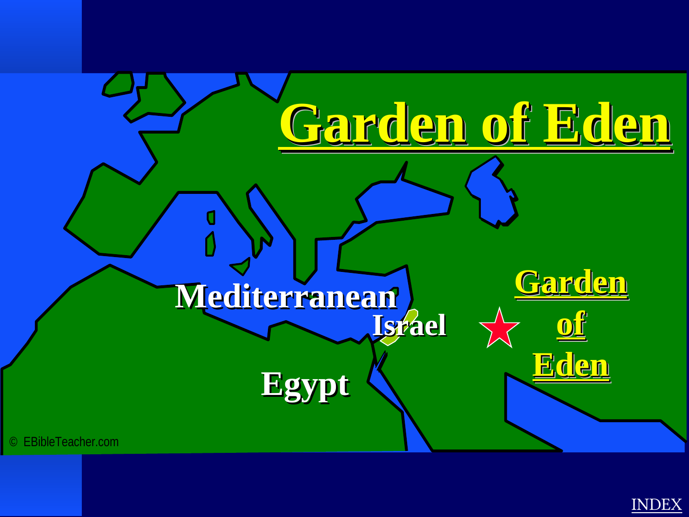
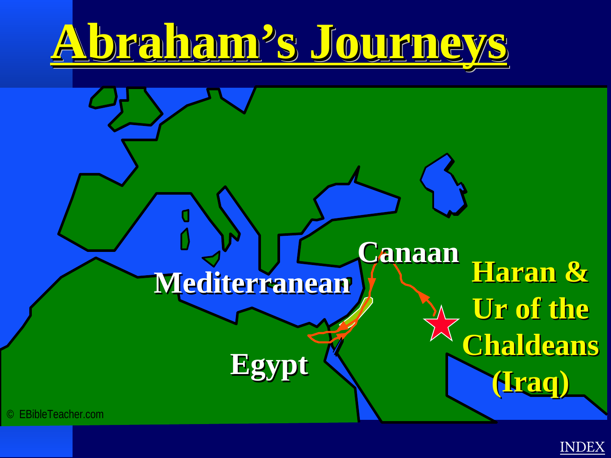

Christian in identity
The platform openly approaches the Bible as Christian Scripture and gives Jesus, the Gospel, and the early Church their proper place in the product.
Scripture Atlas transforms the supplied Bible Class Atlas into a contemporary digital learning experience while keeping source boundaries, attribution and uncertainty visible.
The platform openly approaches the Bible as Christian Scripture and gives Jesus, the Gospel, and the early Church their proper place in the product.
Visitors do not need to share Christian belief to use the geography, history, timeline, maps or learning tools. Interfaith and academic visitors are treated respectfully.
The supplied atlas is a 2004 teaching resource. Where the source marks a location as traditional or uncertain, this site should preserve that distinction rather than presenting conjecture as fact.
The website interface, interaction model, quiz system, typing test and responsive learning architecture are new. Selected original visuals are retained as attributed teaching material.

